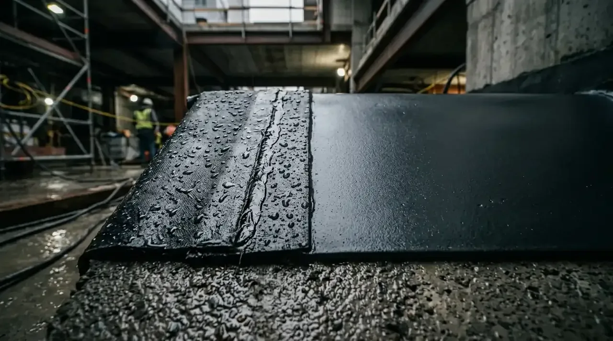

Apa Perbedaan Prinsip Kerja Waterproofing Membran dan Coating?
Prinsip kerja membran mengandalkan lapisan lembaran fisik kedap air, sedangkan coating meresap dan membentuk lapisan film elastis pada pori-pori permukaan beton.
Sistem membran (bituminous sheet membrane) dipasang dengan metode pemanasan api las gas (torch-on) atau lem adesif dingin. Lapisan aspal bitumen yang meleleh akan menyatu rapat dengan primer beton, menciptakan pelindung fisik tebal yang sangat tangguh menahan genangan air jangka panjang. Berdasarkan survei teknis Asosiasi Ahli Rekayasa Konstruksi Indonesia (HAKI) 2025/2026, sekitar 67% kebocoran dak atap gedung komersial bermula dari infiltrasi air mikro yang dibiarkan tanpa pelapis elastis berstandar minimum elastisitas 300%.
Sebaliknya, waterproofing coating diaplikasikan layaknya cat tebal menggunakan kuas, rol, atau alat semprot airless sprayer. Formulasi kimianya terbagi atas dua tipe utama: tipe berbasis semen 2-komponen (cementitious slurry) yang mengkristal di dalam pori beton, serta tipe elastomerik polyurethane (PU) yang memiliki daya mulur tinggi mengikuti pergerakan susut-muai beton akibat terik matahari tropis.
- Fillet / Chamfer Sudut: Buat sudut konus 5×5 cm pada semua pertemuan antara lantai dak dan dinding parapet agar lembaran membran tidak tertekuk patah.
- Uji Rendam 48 Jam (Flood Test): Selalu lakukan uji genangan air setinggi 5 cm selama 2×24 jam sebelum pemasangan lapisan penutup lantai/screed.
- Kemiringan Dak: Pastikan kemiringan screed minimal 1% hingga 2% mengarah langsung ke corong pipa talang air (roof drain).
Bagaimana Komparasi Kekuatan Ketahanan dan Elastisitas Kedua Material?
Membran memiliki ketahanan mekanis benturan lebih kokoh, sementara coating PU memiliki elastisitas superior untuk meredam retak rambut struktural.
Setiap material memiliki profil kinerja yang berbeda terhadap paparan cuaca luar ruangan dan gesekan fisik:
1. Waterproofing Membran Bakar (Torch-On Granule / Sanded)
- Kelebihan: Ketebalan pasti terjamin (standar pabrik 3 mm atau 4 mm), diperkuat serat poliester/fiberglass anti-sobek, tahan tusukan akar pada green roof, dan memiliki umur pakai di atas 10–12 tahun bila terlindungi screed pelindung.
- Kelemahan: Membutuhkan keahlian tenaga ahli bersertifikat dalam penanganan api las; titik rawan kebocoran berada pada sambungan tumpang tindih (lap joint) selebar 10 cm jika pemanasan tidak merata.
2. Waterproofing Coating (Polyurethane & Cementitious)
- Kelebihan: Bersifat seamless (tanpa sambungan sama sekali), mampu menjangkau lekukan rumit seperti pipa pembuangan air (floor drain), celah parapet, dan sudut pertemuan 90°. Varian PU Hybrid tahan sinar UV langsung tanpa perlu lapisan plester penutup.
- Kelemahan: Ketebalan lapisan kering (dry film thickness) sangat bergantung pada ketelitian jumlah lapis; rentan rusak jika diaplikasikan di atas substrat beton yang masih basah atau belum cukup umur (<28 hari).
Tabel Komparasi Spesifikasi Teknis Waterproofing Membran vs Coating
Perbandingan menyeluruh parameter teknis membantu penentuan jenis insulasi sesuai peruntukan beban area proyek Anda.
| Parameter Teknis | Waterproofing Membran Bakar (3-4 mm) | Waterproofing Coating Polyurethane (PU) | Waterproofing Coating Cementitious (2K) |
|---|---|---|---|
| Bahan Dasar | Aspal Bitumen + Polimer APP/SBS | Resin Cair Polyurethane Aliphatic | Polimer Akrilik + Semen Modifikasi |
| Ketebalan Lapisan | 3.0 mm – 4.0 mm (pasti) | 1.2 mm – 1.5 mm (multi-layer) | 1.0 mm – 2.0 mm (2 lapis kuas) |
| Daya Mulur (Elongation) | 35% – 45% | > 400% (sangat lentur) | 15% – 25% (semi-kaku) |
| Ketahanan Sinar UV | Wajib tipe granule / butuh screed | Tahan sinar UV langsung (Exposed) | Butuh lapisan pelindung keramik |
| Sistem Sambungan | Ada sambungan lewatan (overlap 10 cm) | Monolitik menyatu (seamless) | Monolitik menyatu (seamless) |
| Estimasi Usia Pakai | 10 – 15 Tahun | 7 – 10 Tahun | 5 – 8 Tahun |
| Area Rekomendasi | Dak beton terbuka lebar, rooftop, basement | Dak talang exposed, kanopi beton | Kamar mandi, bak air, kolam renang |

Pekerjaan pelapisan waterproofing coating elastis lengkap dengan perkuatan serat mesh pada sudut talang beton.
Berapa Estimasi Biaya dan Harga Aplikasi Per Meter Persegi (m²)?
Biaya waterproofing membran berkisar Rp 180.000 – Rp 280.000 per m², sedangkan coating berkisar Rp 95.000 – Rp 210.000 per m² terpasang.
Berdasarkan indeks harga konstruksi BPS Sektor Jasa Konstruksi 2025/2026, rincian biaya pemasangan mencakup material dasar, primer pengikat (primer coat), gas pembakar atau jaring penguat (fiberglass mesh), serta upah tenaga spesialis:
- Membran Bakar Polos (Tebal 3 mm): Rp 180.000 – Rp 220.000 / m².
- Membran Bakar Granule Mineral (Tahan UV): Rp 230.000 – Rp 280.000 / m².
- Coating Cementitious 2-Komponen: Rp 95.000 – Rp 140.000 / m².
- Coating Polyurethane High-Grade: Rp 165.000 – Rp 210.000 / m².
Meskipun investasi awal sistem membran sedikit lebih tinggi, biaya perawatan jangka panjangnya terhitung sangat ekonomis karena ketahanannya yang mencapai lebih dari satu dekade tanpa re-aplikasi berkala.
Bagaimana Tahapan Aplikasi yang Tepat pada Dak Beton Terbuka?
Tahapan aplikasi wajib diawali pembersihan substrat beton, pembuatan sudut chamfering 5 cm, pelapisan primer, dan diakhiri uji rendam air 48 jam.
Agar hasil proteksi kedap air bekerja sempurna tanpa risiko gelembung udara (blistering) atau pengelupasan, ikuti prosedur standar teknis berikut:
- Persiapan Substrat (Substrate Prep): Bersihkan permukaan dari lumut, debu semen, sisa cat lama, dan oli. Lakukan penambalan pada retakan struktur menggunakan pasta epoxy grout.
- Pengecoran Sudut (Fillet / Chamfer): Buat lengkungan sudut konus segitiga 5×5 cm pada semua pertemuan antara lantai dak dan dinding pembatas (parapet) agar lembaran membran atau coating tidak patah.
- Cek Kadar Kelembapan (Moisture Test): Pastikan kadar air substrat di bawah 5% sebelum pengaplikasian membran aspal untuk menghindari perangkap uap air panas.
- Uji Genangan Air (Flood Test): Sumbat semua pipa talang pembuangan, lalu genangkan air setinggi minimal 5 cm selama 2×24 jam untuk memastikan tidak ada rembesan ke lantai bawah.
Pertanyaan yang Sering Diajukan (FAQ)
Kesimpulan Praktis
Memilih antara membran bakar dan coating harus didasarkan pada karakteristik luas area, paparan sinar matahari, dan kompleksitas instalasi pipa. Untuk atap dak utama dengan bentang lebar, waterproofing membran bakar memberikan keandalan struktural jangka panjang yang solid. Sementara untuk area basah dan talang sempit, coating menawarkan kemudahan aplikasi tanpa celah sambungan.
Bekerja sama dengan aplikator profesional bersertifikat menjamin properti Anda terlindungi dari bahaya bocor secara tuntas dan bergaransi resmi.